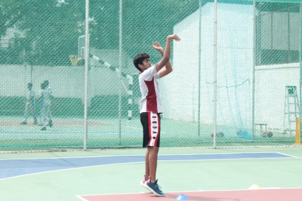

Sriya Chaparala
Playing basketball requires teamwork, determination, passion and confidence. These are the qualities that the CHIREC Basketball teams are channelling into their practice as they prepare for the upcoming clusters in Tuni, Visakhapatnam. Anyone who has seen these teams play can see that they are passionate about the intricate game and strive to perform as well as they possibly can.
"Our team strength is that we never give up and we work well under pressure," said Shreenidhi Ramaswamy, eleventh grader, who is the captain of the under-17 girl's basketball team. When asked about the team's preparation for the upcoming clusters, she said that the team is practising in the mornings and the evenings and that she believes they have a good chance of winning. Regarding what she expects from the team members, she said that she hopes that the players give their best and work well together as a team. When asked about how the team is training for the clusters, Arjun Gandra, a player in the under-17 boy's basketball team, said that the players are practising regularly and working hard. He said that he expects the team to win and the players to give it their best shot. When questioned about the team's strength, he said that the team members have good coordination and work as a flawless unit.

Picture Credits: Shreyani Kadiyala.
When asked about the ongoing practice for the clusters, Lalith Sir, the school basketball coach, said that even though the students are busy with exams, the practice is going on as per the schedule and is exceeding his expectations. When asked about what he expects from the team, he said that winning or losing isn't important, and that everyone should get a chance to play and improve their skills and techniques. Regarding the improvement in the players' performances from last year to this year, Lalith Sir said that the teams are taking part in more tournaments this year and that they are striving to reach their full potential through constant practice.
The teams of CHIREC needn’t worry when it comes to support; they’ve got the entire school rooting for them. The amount of hard work and practice the players have put in is bound to pay off. These athletes are focused, confident, ready to play and make us proud.
An Initiative by CHIREC International CBSE
THE ECHO 2019
Coded by
Aashish Kalidindi